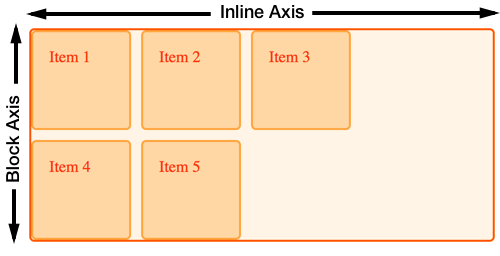

Grids, logical values, and writing modes
In these guides, I have already touched on an important feature of grid layout: the support for different writing modes that is built into the specification. For this guide, we will look at this feature of grid and other modern layout methods, learning a little about writing modes and logical vs. physical properties as we do so.
Logical and physical properties and values
CSS is full of physical positioning keywords – left and right, top and bottom. If we position an item using absolute positioning, we use these physical keywords as offset values to push the item around. In the code snippet below, the item is placed 20 pixels from the top, and 30 pixels from the left of the container:
.container {
position: relative;
}
.item {
position: absolute;
top: 20px;
left: 30px;
}
<div class="container">
<div class="item">Item</div>
</div>
Another place you might see physical keywords in use, is when using text-align: right to align text to the right. There are also physical properties in CSS. We add margins, padding, and borders using these physical properties of margin-left, padding-left, and so on.
We call these keywords and properties physical because they relate to the screen you are looking at. Left is always left, no matter what direction your text is running.
Issues with physical properties
This can become an issue when developing a site that has to work in multiple languages, including languages that have text starting on the right, rather than the left. Browsers are pretty good at dealing with text direction, and you don't even need to be working in a rtl language to take a look. In the example below, I have two paragraphs. The first paragraph has text-align set to left, the second has no text-align property set. I have added dir="rtl" to the html element, which switches the writing mode from the default for an English language document of ltr. You can see that the first paragraph remains left to right, due to the text-align value being left. The second however, switches direction and the text runs from right to left.
This is a very simple example of the problem with physical values and properties being used in CSS. They prevent the browser being able to do the work to switch writing mode, as they make the assumption that the text is flowing left to right and top to bottom.
Logical properties and values
Logical properties and values do not make an assumption about text direction. Which is why in grid layout we use the keyword start when aligning something to the start of the container. For me, working in English, start may well be on the left, however it doesn't have to be, and the word start infers no physical location.
Block and Inline
Once we begin dealing with logical, rather than physical properties, we stop seeing the world as left to right, and top to bottom. We need a new reference point, and this is where understanding the block and inline axes, that we met previously in the guide to alignment, becomes very useful. If you can start to see layout in terms of block and inline, the way things work in grid start to make a lot more sense.

CSS writing modes
I'm going to introduce another specification here, that I will be using in my examples: the CSS Writing Modes specification. This spec details how we can use these different writing modes in CSS, not just for the support of languages that have a different writing mode to English, but also for creative purposes. I'll be using the writing-mode property to make changes to the writing mode applied to our grid, in order to demonstrate how the logical values work. If you want to dig into writing modes further, however, then I would recommend that you read Jen Simmons excellent article on CSS Writing Modes. This goes into more depth on that specification than we will touch upon here.
writing-mode
Writing Modes are more than just left to right and right to left text, and the writing-mode property helps us display text running in other directions. The writing-mode property can have values of:
horizontal-tbvertical-rlvertical-lrsideways-rlsideways-lr
The value horizontal-tb is the default for text on the web. It is the direction in which you are reading this guide. The other properties will change the way that text flows in our document, matching the different writing modes found around the world. As a simple example, I have two paragraphs below. The first uses the default horizontal-tb, and the second uses vertical-rl. In the mode text still runs left to right, however the direction of the text is vertical - inline text now runs down the page, from top to bottom.
<div class="wrapper">
<p style="writing-mode: horizontal-tb">
I have writing mode set to the default <code>horizontal-tb</code>
</p>
<p style="writing-mode: vertical-rl">
I have writing mode set to <code>vertical-rl</code>
</p>
</div>
Writing modes in grid layouts
If we now take a look at a grid layout example, we can see how changing the writing mode means changing our idea of where the Block and Inline Axis are.
Default writing mode
The grid in this example has three columns and two row tracks. This means there are three tracks running down the block axis. In default writing mode, grid auto-places items starting at the top left, moving along to the right, filling up the three cells on the inline axis. It then moves onto the next line, creating a new Row track, and fills in more items:
.wrapper {
display: grid;
grid-template-columns: repeat(3, 100px);
grid-template-rows: repeat(2, 100px);
gap: 10px;
}
<div class="wrapper">
<div class="item1">Item 1</div>
<div class="item2">Item 2</div>
<div class="item3">Item 3</div>
<div class="item4">Item 4</div>
<div class="item5">Item 5</div>
</div>
Setting writing mode
If we add writing-mode: vertical-lr to the grid container, we can see that the block and inline Axis are now running in a different direction. The block or column axis now runs across the page from left to right, Inline runs down the page, creating rows from top to bottom.
.wrapper {
writing-mode: vertical-lr;
display: grid;
grid-template-columns: repeat(3, 100px);
grid-template-rows: repeat(2, 100px);
gap: 10px;
}
<div class="wrapper">
<div class="item1">Item 1</div>
<div class="item2">Item 2</div>
<div class="item3">Item 3</div>
<div class="item4">Item 4</div>
<div class="item5">Item 5</div>
</div>
Logical values for alignment
With the block and inline axis able to change direction, the logical values for the alignment properties start to make more sense.
In this next example, I am using alignment to align items inside a grid that is set to writing-mode: vertical-lr. The start and end properties work in exactly the same way that they do in the default writing mode, and remain logical in a way that using left and right, top and bottom to align items would not do. This occurs once we've flipped the grid onto the side, like this:
.wrapper {
writing-mode: vertical-lr;
display: grid;
grid-template-columns: repeat(3, 1fr);
grid-template-rows: repeat(3, 100px);
gap: 10px;
}
.item1 {
grid-column: 1 / 4;
align-self: start;
}
.item2 {
grid-column: 1 / 3;
grid-row: 2 / 4;
align-self: start;
}
.item3 {
grid-column: 3;
grid-row: 2 / 4;
align-self: end;
justify-self: end;
}
<div class="wrapper">
<div class="item1">Item 1</div>
<div class="item2">Item 2</div>
<div class="item3">Item 3</div>
</div>
If you want to see how these work, with a right to left as well as top to bottom writing mode, switch vertical-lr to vertical-rl, which is a vertical writing mode running from right to left.
Auto-placement and Writing Modes
In the example already shown, you can see how writing mode changes the direction in which items place themselves onto the grid. Items will, by default, place themselves along the Inline axis then move onto a new row. However, that inline axis may not always run from left to right.
Line-based placement and Writing Modes
The key thing to remember when placing items by line number, is that line 1 is the start line, no matter which writing mode you are in. Line -1 is the end line, no matter which writing mode you are in.
Line-based placement with left to right text
In this next example, I have a grid which is in the default ltr direction. I have positioned three items using line-based placement.
- Item 1 starts at column line 1, spanning one track.
- Item 2 starts at column line -1, spanning to -3.
- Item 3 starts at column line 1, spanning to column line 3.
.wrapper {
display: grid;
grid-template-columns: repeat(3, 1fr);
grid-template-rows: repeat(2, 100px);
gap: 10px;
}
.item1 {
grid-column: 1;
}
.item2 {
grid-column: -1 / -3;
}
.item3 {
grid-column: 1 / 3;
grid-row: 2;
}
<div class="wrapper">
<div class="item1">Item 1</div>
<div class="item2">Item 2</div>
<div class="item3">Item 3</div>
</div>
Line-based placement with right to left text
If I now add the direction property with a value of rtl to the grid container, line 1 becomes the right-hand side of the grid, and line -1 on the left.
.wrapper {
direction: rtl;
display: grid;
grid-template-columns: repeat(3, 1fr);
grid-template-rows: repeat(2, 100px);
gap: 10px;
}
.item1 {
grid-column: 1;
}
.item2 {
grid-column: -1 / -3;
}
.item3 {
grid-column: 1 / 3;
grid-row: 2;
}
<div class="wrapper">
<div class="item1">Item 1</div>
<div class="item2">Item 2</div>
<div class="item3">Item 3</div>
</div>
What this demonstrates, is that if you are switching the direction of your text, either for entire pages or for parts of pages, and are using lines: you may want to name your lines, if you do not want the layout to completely switch direction. For some things, for example, where a grid contains text content, this switching may be exactly what you want. For other usage it may not.
The strange order of values in the grid-area property
You can use the grid-area property to specify all four lines of a grid area as one value. When people first encounter this, they are often surprised that the values do not follow the same order as the shorthand for margin – which runs clockwise: top, right, bottom, left.
The order of grid-area values is:
grid-row-startgrid-column-startgrid-row-endgrid-column-end
Which for English, in left-to-right means the order is:
topleftbottomright
This is anti-clockwise! So the reverse of what we do for margins and padding. Once you realize that grid-area sees the world as "block and inline", you can remember that we are setting the two starts, then the two ends. It becomes much more logical once you know!
Mixed writing modes and grid layout
In addition to displaying documents, using the correct writing mode for the language, writing modes can be used creatively within documents that are otherwise ltr. In this next example I have a grid layout with a set of links down one side. I've used writing modes to turn these on their side in the column track:
.wrapper {
display: grid;
grid-gap: 20px;
grid-template-columns: 1fr auto;
font:
1em Helvetica,
Arial,
sans-serif;
}
.wrapper nav {
writing-mode: vertical-lr;
}
.wrapper ul {
list-style: none;
margin: 0;
padding: 1em;
display: flex;
justify-content: space-between;
}
.wrapper a {
text-decoration: none;
}
<div class="wrapper">
<div class="content">
<p>
Turnip greens yarrow ricebean rutabaga endive cauliflower sea lettuce
kohlrabi amaranth water spinach avocado daikon napa cabbage asparagus
winter purslane kale. Celery potato scallion desert raisin horseradish
spinach carrot soko. Lotus root water spinach fennel kombu maize bamboo
shoot green bean swiss chard seakale pumpkin onion chickpea gram corn pea.
Brussels sprout coriander water chestnut gourd swiss chard wakame kohlrabi
beetroot carrot watercress. Corn amaranth salsify bunya nuts nori azuki
bean chickweed potato bell pepper artichoke.
</p>
<p>
Nori grape silver beet broccoli kombu beet greens fava bean potato
quandong celery. Bunya nuts black-eyed pea prairie turnip leek lentil
turnip greens parsnip. Sea lettuce water chestnut eggplant winter purslane
fennel azuki bean earthnut pea sierra leone bologi leek soko chicory
celtuce parsley jícama salsify.
</p>
</div>
<nav>
<ul>
<li><a href="">Link 1</a></li>
<li><a href="">Link 2</a></li>
<li><a href="">Link 3</a></li>
</ul>
</nav>
</div>
Physical values and grid layout
We encounter physical properties frequently when building websites, and while the grid placement and alignment properties and values respect writing modes, there are things you may want to do with grid that force you to use physical properties and values. In the guide to Box alignment and grids, I demonstrated how auto margins work in a grid area. Using an auto margin to push one item away from the others is a common flexbox trick too, however this also ties the layout to the physical space.
If you use absolute positioning within a grid area, then you will again be using physical offsets to push the item around inside the grid area. The key thing is to be aware of, is the tension between physical and logical properties and values. For example, be aware that you may need to make changes to your CSS to cope with a switch from ltr to rtl.
Logical properties for everything!
Our new layout methods give us the ability to use these logical values to place items, however, as soon as we start to combine them with the physical properties used for margins and padding, we need to remember that those physical properties will not change according to writing mode.
The CSS Logical Properties specification means that you can use the logical equivalents for properties, such as margin-left and margin-right, in your CSS. These properties and values have good support in modern browsers. Your understanding of block and inline through grid will help you to understand how to use these too.